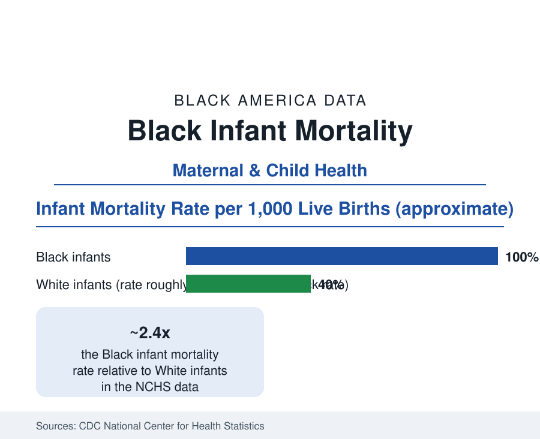

Black Public Health
Black Infant Mortality: The Rate That Refuses the Century
Black infants die in their first year at about two and a half times the rate of White infants — a gap as wide as it was generations ago. The vital statistics data.

Black infants die before their first birthday at roughly two and a half times the rate of White infants — in the National Center for Health Statistics' linked birth-and-death files, a Black infant mortality rate around ten to eleven per thousand live births against a White rate around four to five. The absolute rates have fallen dramatically for both groups across the past century; the ratio has not. It is the vital-statistics system's most persistent number, and the maternal profile's other half. This article reports the infant data.
The Composition of the Gap: Preterm First
The decomposition is the literature's foundation: the largest single driver is prematurity. Black mothers deliver preterm (before 37 weeks) at rates around one and a half times the White rate — roughly fourteen to fifteen percent of Black births against nine to ten percent — and very preterm (before 32 weeks, where mortality concentrates) at about double. Preterm-related deaths account for the largest share of the overall gap in the NCHS cause analyses, followed by congenital conditions, sudden unexpected infant death (the SUID file: Black rates roughly double, with the sleep-environment variables of the safe-sleep data and the bed-sharing and bedding distributions measured in the CDC's sleep-practice surveys), infections, and the maternal-complications category that joins this file to the maternal mortality profile. The birthweight distribution tells the same story in grams: low birthweight affects roughly one in seven Black births, very low birthweight about one in thirty-five — the NICU system's caseload in the natality data.
The Paradox Literature: Education Does Not Close It
Infant mortality is where the health section's education paradox cuts deepest. The NCHS analyses stratify by maternal education and find the gap intact — in the data's most quoted cell, Black mothers with college degrees lose infants at rates above White mothers who did not finish high school — and by income, nativity (U.S.-born Black mothers' rates exceed African-born immigrants' markedly, the immigrant-paradox file), and marital status, with the gap narrowing in none. The weathering framework (the maternal profile's accelerated-aging hypothesis) was built substantially on this table: the Black teen mothers' infants faring better, relative to their White peers, than the infants of Black mothers in their late twenties — an age pattern inverted from the standard risk model and consistent across the natality series. The reference reports the finding as the field's central unexplained fact: the variable that survives every control is the mother's lifetime in the data's own terms.
What Works: The Intervention Ledger
The intervention evidence is specific and partial. Prenatal care adequacy narrows outcomes modestly in the analyses; the group-prenatal-care trials show preterm reductions in some populations; progesterone therapy for prior-preterm mothers addresses a defined slice; the NICU quality data (the Vermont Oxford network's analyses) show survival gaps by hospital — Black very-low-birthweight infants are born disproportionately at hospitals with worse risk-adjusted outcomes, a sorting effect that accounts for a meaningful share of the survival gap and is, in principle, a referral-pattern fix. Home-visiting programs (the Nurse-Family Partnership's randomized-trial legacy) post infant-health gains in their populations; safe-sleep campaigns cut the SUID rates of the 1990s dramatically across groups while leaving the ratio; breastfeeding initiation and duration gaps (the CDC's breastfeeding report card) track the maternity-leave and hospital-practice data. The city and state files show the map's variation — the worst state rates run several points above the best for both groups — proving environmental leverage exists while the national ratio holds.
Fetal Death and the Full Perinatal Picture
The stillbirth data extend the file before birth: fetal death at 20 weeks or later occurs at roughly twice the rate in Black pregnancies in the NCHS fetal-death files — a loss counted separately from infant mortality and larger in absolute terms than several of its components — with the same preterm-and-maternal-health drivers and an even thinner research and prevention infrastructure. Combined perinatal mortality (stillbirths plus first-week deaths) is the international-comparison measure, and on it the United States' Black population records rates comparable to middle-income countries in the WHO tables — the statistic the global-health literature uses to locate the American disparity in world terms. The counting itself is part of the file: fetal-death reporting quality varies by state in the vital-statistics audits.
Reading the Infant Data
Infant mortality was the twentieth century's proudest public health curve — sanitation, antibiotics, neonatal intensive care — and its Black ratio is the curve's unfinished business, flat across the decades that halved everything else. The number is small enough to be personal (some thousands of infants a year) and large enough to be structural; the vital records hold both scales at once, which is why this file, of all the health section's, is the one the field reads as the system's conscience.
More in Black Public Health
Hypertension Among Black Adults: Prevalence, Control, and Consequences
About 55 percent of Black adults have hypertension — the highest rate of any U.S. group. Prevalence, onset, control, and the stroke, heart, and kidney consequences in the data.
Diabetes Among Black Adults: Prevalence and Complications
Nearly one in five Black adults has diabetes, diagnosed or undiagnosed — and its complications fall with particular weight. The CDC data on prevalence, control, and outcomes.
Black Life Expectancy: The Gap at Birth and Its Causes
Black life expectancy at birth is about 73 years, roughly five years below the national figure — the summary measure of every health gap in this section. The CDC data.
Source: Centers for Disease Control and Prevention, National Center for Health Statistics linked birth and infant death data; March of Dimes; CDC preterm birth data.